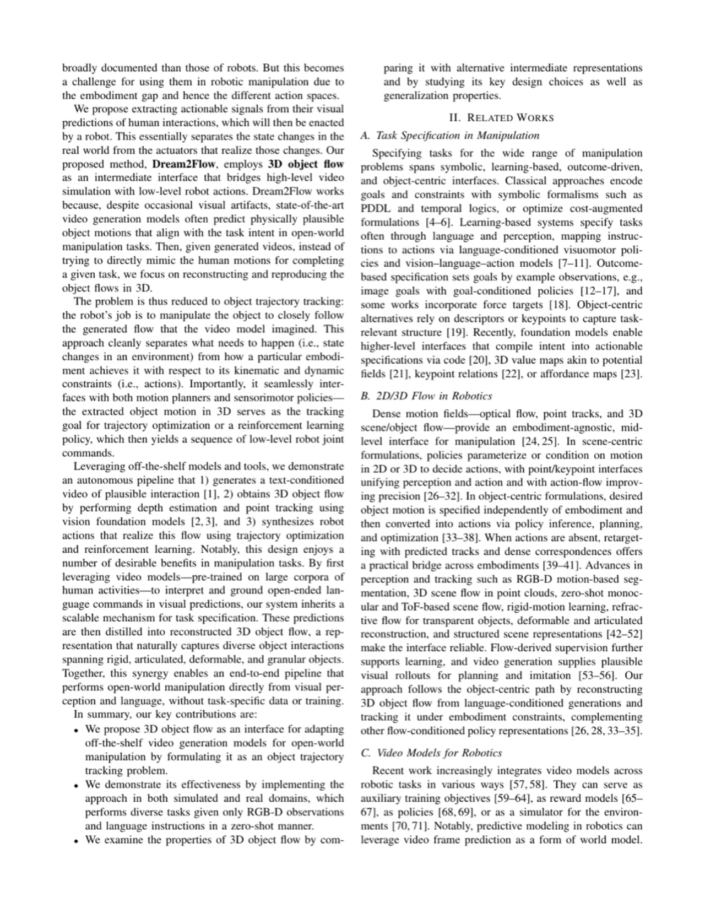
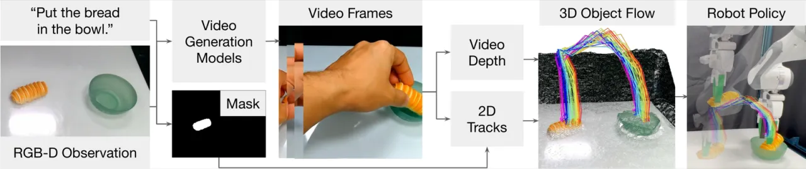
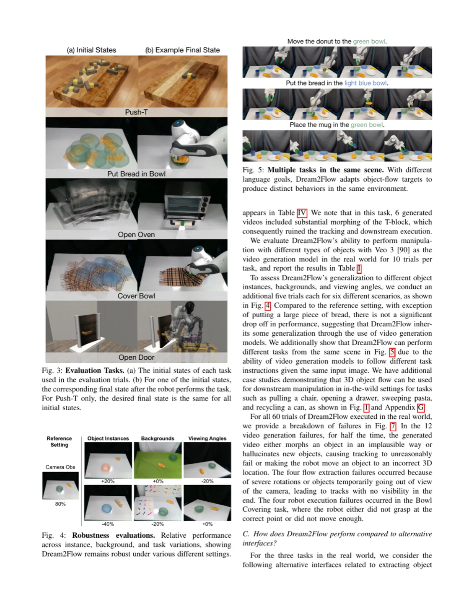
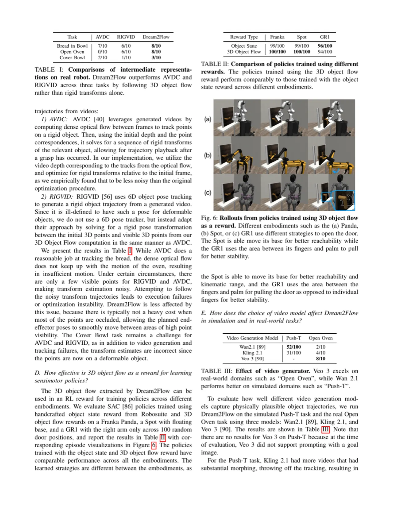
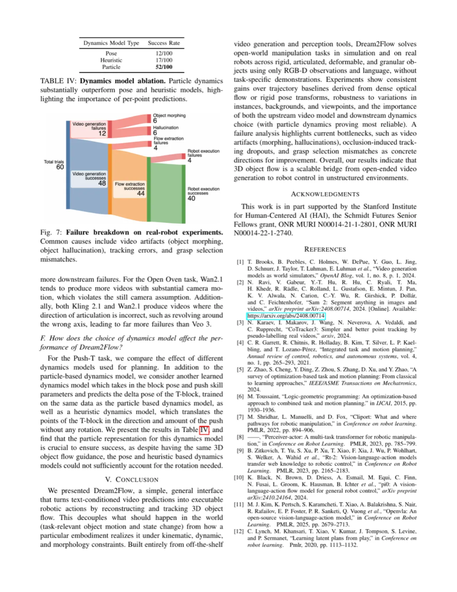

Dream2Flow 提出以 3D object flow（物体三维运动轨迹）作为中间表示，将预训练视频生成模型产生的视觉预测转换为可执行的机器人控制指令。该框架无需任务专属演示数据，即可在刚性、关节式、可变形和颗粒状等多类物体上实现零样本操控，有效跨越了视频模型与机器人执行器之间的 embodiment gap。
前沿视频生成模型已能合成逼真的人类操作场景，但如何将其中蕴含的物理知识转化为机器人可执行的指令，仍是一个开放难题。核心挑战在于：视频描述的是物体状态变化，而机器人需要的是驱动这些变化的执行器动作——两者之间存在巨大的 embodiment gap。
"Generative video modeling has emerged as a compelling tool to zero-shot reason about plausible physical interactions for open-world manipulation. Yet, it remains a challenge to translate such human-led motions into the low-level actions demanded by robotic systems."
现有方法通常试图直接从视频帧预测关节角度，但视频模型对具身细节（手型、关节构型）的模拟往往失真，导致难以直接跟随。Dream2Flow 的洞察是：物体的运动轨迹比执行器动作更稳定、更可迁移——无论使用哪种机器人，"把面包放进碗里"这一动作都要求面包沿相似的 3D 路径运动。

Dream2Flow 是一条三阶段 pipeline：视频生成 → 3D flow 提取 → 机器人控制。关键设计是以 3D object flow 解耦"物体做了什么"与"执行器如何驱动"，使跨具身迁移成为可能。

以初始 RGB-D 图像和任务指令为条件，调用 image-to-video 生成模型合成任务执行视频帧序列。系统采用 Veo 3 [90] 等开箱即用的视频生成器，无需针对机器人场景微调。
利用视觉基础模型串联完成三步：① 用初始深度图初始化物体 mask；② 用 SpatialTrackerV2 [80,81] 从视频帧估计每帧的视频深度；③ 用 CoTracker [1] 追踪 2D 点轨迹，结合深度反投影得到以初始帧为参考的 3D 轨迹 P1:T。该表示从物体掩码内均匀采样 n 个点，以初始深度 D0 对第一帧对齐，输出物体中心 3D flow。
根据物体类型和机器人平台，采用两种策略将 3D flow 转为低层指令：
• Trajectory Optimization（轨迹优化）：适用于刚性物体（如 AVDC [2]），以末端执行器位姿序列跟踪重建的 3D 物体轨迹，并加入鼓励匹配 3D flow 同时惩罚碰撞的奖励。
• Reinforcement Learning（强化学习）：适用于可变形、颗粒状等难以直接做轨迹优化的物体（如 RIGVID [56]），以 3D object flow 作为奖励信号训练无演示 RL 策略。
论文指出，3D flow 具备三项关键优势：（1）跨具身可迁移——物体运动与机器人关节空间解耦；（2）适配多种物体类型——刚性、关节式、可变形、颗粒状均适用；（3）无需任务演示——直接从视频生成模型的输出中提取，零样本使用预训练能力。
"By separating the state changes from the actuators that realize those changes, Dream2Flow overcomes the embodiment gap and enables zero-shot guidance from pre-trained video models."
实验在仿真（Push-T 任务）和真实世界（60 次试验，含推、放、开、盖、扫、回收六类任务）中评估 Dream2Flow，测试对象涵盖 Franka Panda、Boston Dynamics Spot、Fourier GR1 三种机器人。
以下为真实机器人 60 次试验的各阶段通过率：
| 阶段 | 尝试次数 | 成功次数 | 成功率 |
|---|---|---|---|
| Video Generation（视频生成） | 60 | 48 | 80% |
| Flow Extraction（流提取） | 48 | 44 | 92% |
| Robot Execution（机器人执行） | 44 | 40 | 91% |

在 Push-T 任务上，Dream2Flow 使用 Veo 3 视频生成器（Veo 3 [90]），与 Wan2.1 [99] 和 Kling 2.1 等视频模型对比：
| 视频模型 | Push-T 成功率 | Open Oven 成功率 |
|---|---|---|
| Wan2.1 [99] | 32/100 | 2/10 |
| Kling 2.1 | 10/100 | 4/10 |
| Veo 3 [90] | 82/100 | 8/10 |


论文还测试了 Dream2Flow 在同一场景多任务（multi-task in the same scene）中的表现（Figure 5）：给定相同的环境布局，仅更换语言指令，系统即可切换目标物体完成不同操作，验证了框架的通用性。
论文指出，视频生成失败（object morphing 和 hallucination）占所有失效的 50%（12/24 次）。当视频模型生成形态不一致的物体（如形状骤变）或幻觉内容（如物理上不可能的运动），下游的 flow 提取和机器人执行均无法正常工作。系统性能严重依赖所使用视频生成器的质量，且不同模型差异显著（Push-T 成功率从 Kling 的 10% 到 Veo 3 的 82%）。
3D flow 提取依赖 CoTracker 和 SpatialTrackerV2 等视觉跟踪工具，当物体被严重遮挡或离开相机视野（论文提及"相机旋转导致点超出视野"）时，点轨迹丢失，导致 flow 提取失败（60 次试验中有 4 次）。此外，Cover Bowl 任务中物体常处于遮挡状态，使执行变得困难。
轨迹优化路径（AVDC-based）假设所跟踪物体为刚体，通过 6D 位姿变换描述运动。对于高度可变形物体（如布料）或拓扑结构复杂的颗粒状物体（如意大利面），系统切换至 RL 路径，但 RL 训练需在仿真器中进行，存在 sim-to-real gap。
系统初始化需要深度信息（D 通道），限制了在纯 RGB 场景中的部署。此外，整条 pipeline 串联了多个外部预训练模型（视频生成器、CoTracker、SpatialTrackerV2），任一模型更新或不可用均可能影响系统稳定性，推理延迟也因此较高。